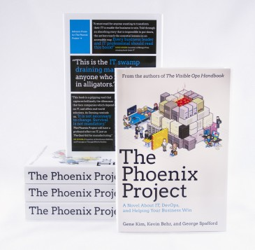

The Phoenix Project
Este enero se publicó el libro The Phoenix Project: A Novel About IT, DevOps, and Helping Your Business Win, de Gene Kim, Kevin Behr y George Spafford. Pese a su novedad, es lo que se podría denominar una de las lecturas sagradas del movimiento DevOps. David Acacio ha elaborado una reseña sobre el libro que podéis leer a continuación.
A través de un tweet de Nathen Harvey, que es el Technical Community Manager de Opscode, me enteré de una oferta especial del libro The Phoenix Project en Amazon y, sin pensármelo dos veces, me hice con una copia digital de esta obra sobre IT y Devops.
The Phoenix Project nos introduce en la piel de Bill Palmer, un directivo IT de una gran empresa llamada US Parts Unlimited, que es ascendido a Vicepresidente de Operaciones IT justo cuando queda poco para la puesta en producción de un proyecto interno que definirá el futuro de la compañía. Se nos presenta un entorno caótico y lleno de incidencias, que poco a poco Bill, aplicando diversas técnicas y metodologías ágiles y de devops, va reconduciendo.
Algunos de los elementos que aparecen o se hacen referencia son:
- Las 3 vias (The three ways)
- Pizarras Kanban
- kata
- Chaos Monkeys
- Automatización
- Mentoring
Este libro consiguió engancharme desde el primer momento, ya que el escenario de incidencias presentado era, preocupantemente, muy parecido al que me toca vivir diariamente y tenía curiosidad para ver como Bill salía airoso en cada situación, sitiéndome totalmente identificado con el personaje.
En mi opinión, The Phoenix Project consigue mostrar la aplicación práctica de las diversas técnicas y como éstas van reconduciendo las situaciones presentadas.